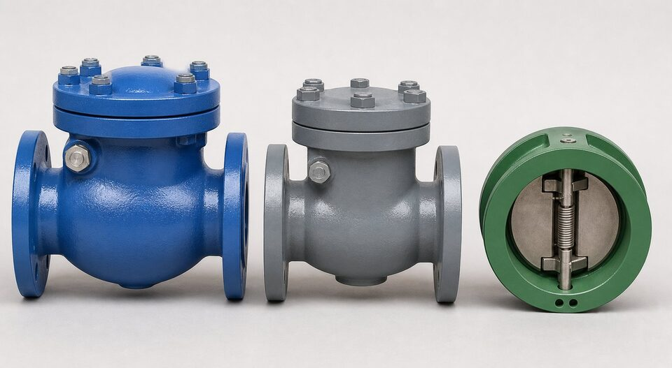

چرا مقایسه طرحها مهم است؟
سه طرح اصلی شیر یکطرفه از نظر ظاهر به هم شبیهاند اما از نظر رفتار هیدرولیکی کاملاً متفاوت عمل میکنند. انتخاب طرح اشتباه خود را در هفتههای اول بهرهبرداری نشان میدهد: صدای کوبش، نشتی زودرس یا حتی آسیب به خط بر اثر ضربه قوچ. از آنجا که قیمت این سه طرح در سایزهای کوچک نزدیک به هم است، بهای انتخاب درست بسیار کمتر از بهای انتخاب غلط است. در این مقاله هر طرح را جداگانه بررسی و سپس در یک جدول مقایسه میکنیم.

طرح سوئینگ؛ ساده و کمافت
در طرح سوئینگ، دیسک مانند یک در روی لولایی که بالای نشیمنگاه قرار دارد آویزان است. با شروع جریان، دیسک به سمت بالا چرخیده و تقریباً کامل از مسیر خارج میشود؛ به همین دلیل افت فشار این طرح در حالت باز از همه کمتر است. نقطه ضعف آن، مسیر طولانی بسته شدن دیسک است: اگر جریان ناگهان معکوس شود، دیسک ممکن است هنوز باز باشد و سپس با شدت روی نشیمنگاه کوبیده شود. این طرح برای خطوط افقی با جریان پایدار ایدهآل است و در سایزهای بزرگ با میراگر یا اهرم وزنهدار ارائه میشود تا سرعت بسته شدن کنترل شود.
طرح لیفت؛ آببندی دقیق در مسیرهای کوچک
در طرح لیفت، دیسک مانند پیستون درون راهنما بالا و پایین میشود و روی نشیمنگاه صاف مینشیند. این ساختار آببندی دقیقتری نسبت به سوئینگ فراهم میکند و به همین دلیل در سایزهای کوچک و فشارهای بالا رایج است. نقطه ضعف آن، افت فشار بالاتر است چون جریان باید از اطراف دیسک عبور کند. طرح لیفت در خطوط عمودی با جریان رو به بالا و با فنر مناسب کار میکند، اما در سایزهای بزرگ به ندرت استفاده میشود؛ چون ابعاد راهنما و دیسک بزرگ شده و پاسخدهی آن کند میگردد.
طرح دوپلیت؛ فشرده و سریع
در طرح دوپلیت، دو دیسک نیمه روی محوری مرکزی با فنر مشترک قرار دارند. فنر باعث میشود دیسکها پیش از معکوس شدن کامل جریان بسته شوند؛ در نتیجه ضربه قوچ به حداقل میرسد. این طرح در سایزهای بزرگ تا یکسوم وزن و طول سوئینگ همسایز است و نصب آن در هر جهتی ممکن است. محدودیت اصلی، فنر مرکزی است که در سرویسهای خورنده باید از متریال مناسب ساخته شود و در سایزهای بسیار بزرگ، دسترسی برای سرویس آن محدودتر از سوئینگ است.
جدول مقایسه سه طرح
| معیار | سوئینگ | لیفت | دوپلیت |
|---|---|---|---|
| افت فشار در حالت باز | کم | متوسط تا زیاد | کم |
| سرعت بسته شدن | کند | متوسط | سریع |
| حساسیت به ضربه قوچ | زیاد | متوسط | کم |
| نصب عمودی | نامناسب | با فنر مناسب | مناسب در همه جهتها |
| سایز اقتصادی | متوسط تا بسیار بزرگ | کوچک تا متوسط | کوچک تا بزرگ |
| قابلیت سرویس نشیمنگاه | خوب | خوب در سایز کوچک | محدود در سایز بزرگ |
| قیمت نسبی در سایز بزرگ | متوسط | کمتر رایج | اقتصادی |
جمعبندی رفتار سه طرح؛ برای جزئیات هر مورد به بخش مربوط مراجعه کنید.
راهنمای انتخاب برای هر سرویس
- خطوط آب و فرایند افقی با جریان پایدار: سوئینگ ساده یا با میراگر.
- دیسچارج پمپ و ایستگاههای پمپاژ: دوپلیت یا آکسیال فنردار.
- خطوط عمودی با جریان رو به بالا: لیفت فنردار یا دوپلیت.
- سایزهای بزرگ با محدودیت فضا و وزن: دوپلیت.
- فشار بالا و سایز کوچک: لیفت.
- کمپرسور و نقاطی که برگشت جریان بسیار سریع است: آکسیال.
جمعبندی
هیچ طرحی مطلقاً بهتر نیست؛ هر کدام برای سرویسی ساخته شدهاند. سوئینگ برای جریان پایدار افقی، لیفت برای فشار بالا و سایز کوچک، و دوپلیت برای نقاطی که سرعت بسته شدن و فشردگی اهمیت دارد. با دانستن پروفایل جریان و الزامات خط، انتخاب به یک تصمیم مهندسی شفاف تبدیل میشود که هم هزینه و هم ریسک ضربه قوچ را کاهش میدهد.
سوالات رایج
کدام طرح کمترین افت فشار را دارد؟
طرح سوئینگ معمولاً کمترین افت فشار را دارد چون دیسک کاملاً از مسیر جریان خارج میشود. دوپلیت نیز افت فشار کمی دارد اما دیسکها بخشی از مسیر را اشغال میکنند.
چرا سوئینگ در برابر ضربه قوچ آسیبپذیر است؟
دیسک سوئینگ به دلیل مسیر طولانی بسته شدن، ممکن است پس از معکوس شدن جریان هنوز باز باشد و سپس با شدت روی نشیمنگاه کوبیده شود؛ این کوبش همان ضربه قوچ است.
در خط عمودی کدام طرح را انتخاب کنیم؟
طرح لیفت با فنر یا دوپلیت؛ چون سوئینگ برای بسته ماندن به جریان نیاز دارد و در خط عمودی ممکن است باز بماند یا نوسان کند.
دوپلیت چه مزیتی در سایز بزرگ دارد؟
وزن و طول بسیار کمتر نسبت به سوئینگ همسایز، که هم هزینه را کاهش میدهد و هم بار سازهای کمتری به لوله وارد میکند.
مطالب مرتبط
- راهنمای جامع شیر یکطرفه
- راهنمای شیرهای یکطرفه دوپلیت
- متریال نشیمنگاه شیرآلات
- راهنمای تست و معیارهای نشتی شیرآلات
با ذکر طرح مورد نیاز (سوئینگ، لیفت یا دوپلیت)، سایز و کلاس، شیر منطبق با مرجع تست به همراه مدارک عرضه میشود.
مشاهده صفحه محصول ← ثبت RFQ همین محصولتامین این تجهیزات را به پیشرو تجهیز فرتاک بسپارید
شرکت پیشرو تجهیز فرتاک تامینکننده تخصصی تجهیزات صنعتی برای پروژههای نفت، گاز، پتروشیمی، فولاد و نیروگاهی است. برای دریافت پیشنهاد فنی و قیمت، استعلام (RFQ) خود را ثبت کنید تا کارشناسان مهندسی فروش در کوتاهترین زمان پاسخ دهند.
- تامین شیرآلات صنعتیخانواده کامل شیر با گواهی مواد و تست
- تامین تجهیزات صنایع نفت و گازپکیج مواد مطابق وندورلیست